Inventory Management - Pages and Components Specification
Screenshots Status: This specification includes references to screenshots. 40 screenshots are now available in the
screenshots/folder:Inventory Management Core (18 screenshots):
- ✅ inventory-management-dashboard.png
- ✅ stock-overview-main.png
- ✅ inventory-balance-report.png
- ✅ stock-cards-list.png
- ✅ stock-card-detail.png
- ✅ slow-moving-report.png
- ✅ inventory-aging-report.png
- ✅ stock-in-list.png
- ✅ inventory-adjustments-list.png
- ✅ inventory-adjustment-detail.png
- ✅ physical-count-setup.png
- ✅ physical-count-dashboard.png
- ✅ spot-check-main.png
- ✅ spot-check-new.png
- ✅ spot-check-active.png
- ✅ spot-check-dashboard.png
- ✅ fractional-inventory.png
- ✅ period-end.png
Plus 22 additional screenshots for procurement, store operations, and workflow components
Only 2 screenshots pending (dynamic routes requiring specific IDs): stock-in-detail.png, physical-count-active.png
Table of Contents
- Pages Overview
- Modals and Dialogs
- Dropdown Fields Reference
- Actions and Buttons Reference
- Form Components
- Data Display Components
- Glossary
Pages Overview
Landing Page
Path: /inventory-management
File: app/(main)/inventory-management/page.tsx
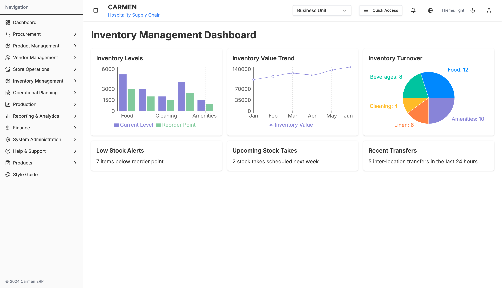
Inventory Management Dashboard - Draggable widget system with real-time analytics
Status: ✅ Production
Purpose: Main entry point for Inventory Management module with customizable dashboard
Components:
- 6 Draggable widgets using React Beautiful DnD
- Inventory Levels Bar Chart
- Inventory Value Trend Line Chart
- Inventory Turnover Pie Chart
- Low Stock Alerts Card
- Upcoming Stock Takes Card
- Recent Transfers Card
Actions:
- Drag and reorder widgets
- Navigate to Stock Overview
- Navigate to Stock In
- Navigate to Inventory Adjustments
- Navigate to Physical Count
- Navigate to Spot Check
Action Flows
Navigate to Stock Overview:
Drag Widget:
Stock Overview Landing
Path: /inventory-management/stock-overview
File: app/(main)/inventory-management/stock-overview/page.tsx
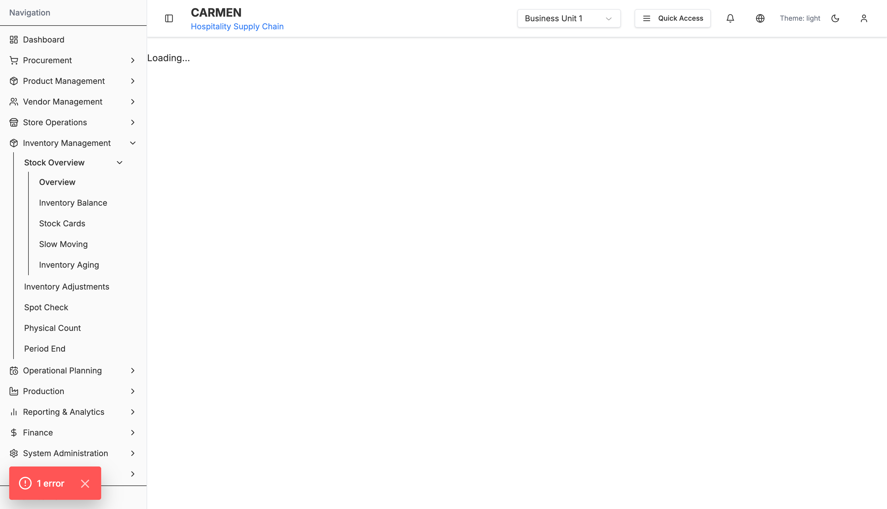
Stock Overview - Multi-location inventory visibility with analytics
Status: ✅ Production
Components:
- Location selector dropdown
- 4 Summary metric cards
- Tabbed interface (Overview, Performance, Transfers)
- Stock Distribution Bar Chart
- Value Distribution Pie Chart
- Quick actions navigation grid
- Location Performance Comparison Chart
- Transfer Suggestions List
Summary Cards:
- Total Items (with location count)
- Total Value (currency formatted)
- Low Stock (red alert)
- Expiring Soon (orange warning)
Tabs:
- Overview
- Performance
- Transfers
Quick Actions:
- Inventory Balance
- Stock Cards
- Slow Moving
- Inventory Aging
Filters:
- Location dropdown (All Locations + individual locations)
Actions:
- Change location filter
- Navigate to sub-reports
- Create transfer from suggestion
Action Flows
Change Location Filter:
Navigate to Inventory Balance:
Create Transfer:
Inventory Balance Report
Path: /inventory-management/stock-overview/inventory-balance
File: app/(main)/inventory-management/stock-overview/inventory-balance/page.tsx
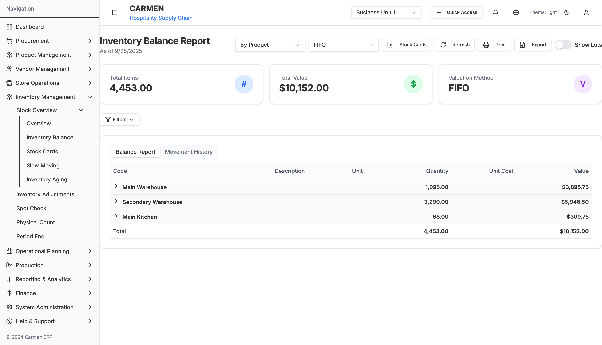
Inventory Balance Report - Detailed balance with lot tracking
Status: ✅ Production
Components:
- Collapsible filter panel
- Hierarchical grouped table
- Movement history side panel
- Export buttons (Excel, PDF)
Filter Fields:
- As of Date (date picker)
- Location Range (from/to dropdowns)
- Category Range (from/to dropdowns)
- Product Range (from/to dropdowns)
- View Type (radio buttons: Category / Product / Lot)
- Show Lots (checkbox)
Table Columns:
- Code
- Description
- Unit
- Quantity
- Average Cost
- Total Value
- Min/Max Thresholds (product level)
- Expiry Date (lot level)
Actions:
- Apply filters
- Toggle filter panel
- Change view type
- Toggle lot visibility
- Click product to view movement history
- Export to Excel
- Export to PDF
- Print report
Action Flows
Apply Filters:
Toggle View Type:
View Movement History:
Export to Excel:
Stock Cards List
Path: /inventory-management/stock-overview/stock-cards
File: app/(main)/inventory-management/stock-overview/stock-cards/page.tsx
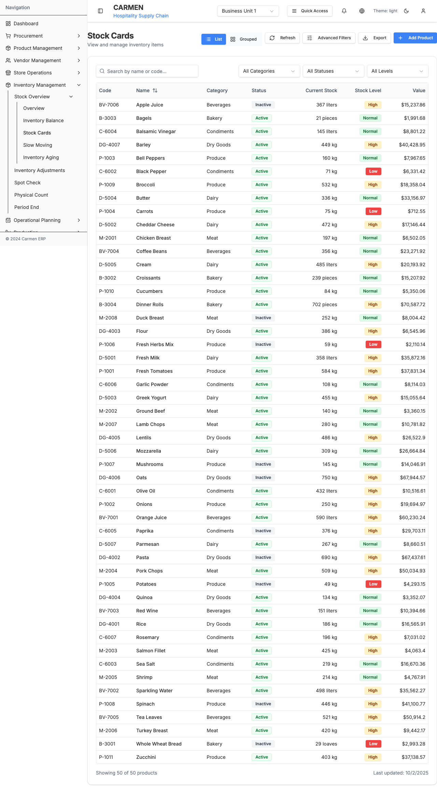
Stock Cards - Browse all product stock cards
Status: 🚧 Prototype
Components:
- Search bar
- Filter panel
- Cards grid (3 cols desktop, 2 tablet, 1 mobile)
Card Content:
- Product image/icon
- Product code
- Product name
- Current quantity + unit
- Status badge
- View Details button
Filters:
- Location dropdown
- Category dropdown
- Stock status (In Stock / Low Stock / Out of Stock)
Actions:
- Search products
- Filter by criteria
- Click card to view details
Action Flows
Search Products:
View Stock Card Detail:
Stock Card Detail
Path: /inventory-management/stock-overview/stock-card
File: app/(main)/inventory-management/stock-overview/stock-card/page.tsx
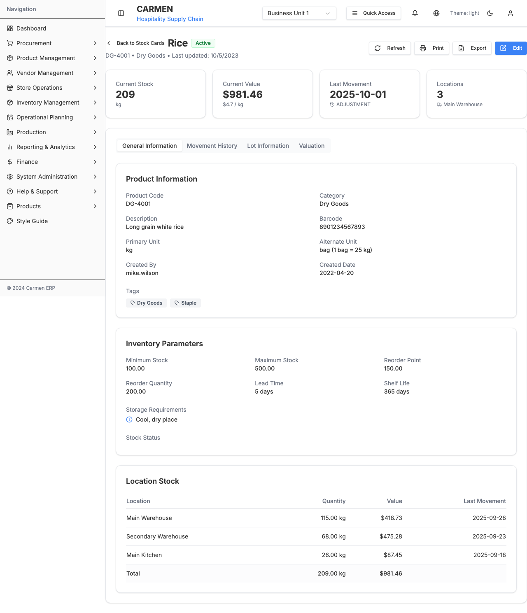
Stock Card Detail - Complete item history with lots
Status: ✅ Production
Tabs:
- General Information
- Lot Information
- Movement History
- Valuation
General Information:
- Product Code
- Product Name
- Category
- Unit of Measure
- Current Stock Level
- Reorder Level
- Maximum Level
- Lead Time (days)
- Last Purchase Date
- Last Purchase Price
- Average Cost
Lot Information Table Columns:
- Lot Number
- Receipt Date
- Expiry Date
- Quantity
- Unit Cost
- Total Value
- Status (Good/Damaged/Expired)
Movement History Table Columns:
- Date/Time
- Transaction Type
- Reference Number
- Lot Number
- Quantity In
- Quantity Out
- Balance
- Unit Cost
- Value
- Location
- User
- Notes
Valuation Panel:
- Valuation Method (FIFO/LIFO/Average)
- Current Total Value
- Average Unit Cost
- Last Purchase Cost
- Cost Variance
Quick Filters:
- All Transactions
- Receipts Only
- Issues Only
- Adjustments Only
- Transfers Only
- Date Range
Actions:
- Filter movements by type
- Filter by date range
- Export to Excel
- Print stock card
- Create adjustment
Action Flows
Filter Movements:
Export Stock Card:
Create Adjustment:
Slow Moving Report
Path: /inventory-management/stock-overview/slow-moving
File: app/(main)/inventory-management/stock-overview/slow-moving/page.tsx
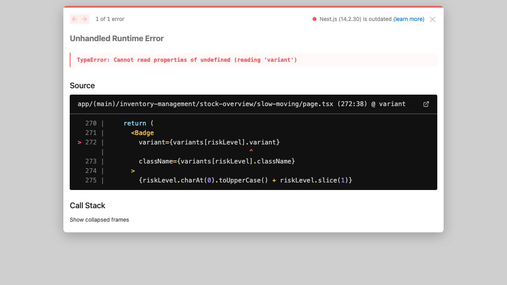
Slow Moving Items - Identify low turnover inventory
Status: ❌ Not Implemented
Filters:
- Time period (30/60/90/180 days)
- Category filter
- Location filter
- Minimum value filter
Table Columns:
- Product Code
- Product Name
- Category
- Location
- Current Quantity
- Last Movement Date
- Days Since Movement
- Current Value
- Turnover Rate
- Recommended Action
Actions:
- Mark for clearance
- Create transfer
- Adjust reorder level
- Export report
Action Flows
Mark for Clearance:
Inventory Aging Report
Path: /inventory-management/stock-overview/inventory-aging
File: app/(main)/inventory-management/stock-overview/inventory-aging/page.tsx
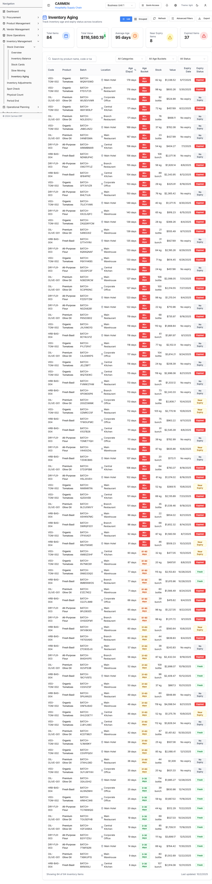
Inventory Aging - Track inventory age and expiry
Status: ❌ Not Implemented
Summary Cards:
- Total Expiring in 7 days (red)
- Total Expiring in 30 days (orange)
- Average Age (days)
- Total Aged Stock Value
Table Columns:
- Product Code/Name
- Location
- Total Quantity
- 0-30 days qty
- 31-60 days qty
- 61-90 days qty
- 90+ days qty
- Expiring Soon (<7 days)
- Total Value
Actions:
- Filter by location
- Filter by aging bucket
- Export report
- Create disposal request
Action Flows
Create Disposal Request:
Stock In List
Path: /inventory-management/stock-in
File: app/(main)/inventory-management/stock-in/page.tsx
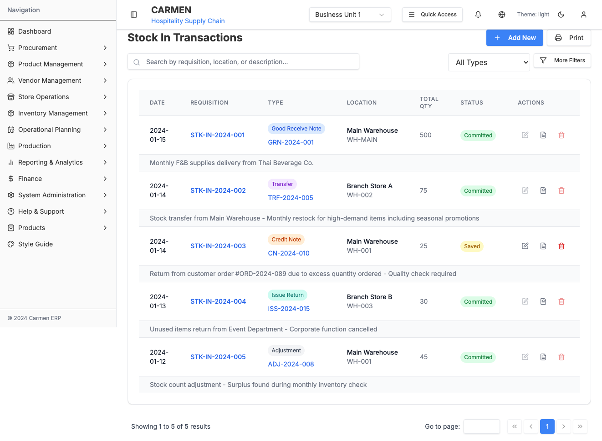
Stock In - Goods receipt listing
Status: ✅ Production
Table Columns:
- Receipt Number
- Receipt Date
- Source (PO/Transfer/Production)
- Source Reference
- Location
- Total Items
- Total Quantity
- Total Value
- Status
- Actions
Filters:
- Date range picker
- Status (All/Pending/Completed)
- Location filter
- Search by reference
Sorting:
- Sort by Date
- Sort by Receipt Number
- Sort by Status
- Sort by Location
Actions:
- Create new receipt
- View receipt detail
- Edit draft receipt
- Post receipt
- Print receipt
Action Flows
Create New Receipt:
Post Receipt:
Stock In Detail
Path: /inventory-management/stock-in/[id]
File: app/(main)/inventory-management/stock-in/components/stock-in-detail.tsx
Stock In Detail - Receipt entry and posting
Status: ⚠️ Partial Implementation
Header Information:
- Receipt Number (auto-generated)
- Receipt Date
- Location dropdown
- Source type (PO/Transfer/Production/Other)
- Source reference
- Supplier (if from PO)
- Notes textarea
Items Table Columns:
- Item Code/Name
- Description
- Ordered Qty (from source)
- Received Qty (editable)
- Unit
- Unit Cost
- Total Cost
- Lot Number (if batch tracked)
- Expiry Date (if applicable)
- Actions (Remove)
Tabs:
- Items
- Journal Entry Preview
Actions:
- Add item
- Remove item
- Edit quantities
- Enter lot details
- Save draft
- Post receipt
- Cancel
Action Flows
Add Item:
Post Receipt:
Inventory Adjustments List
Path: /inventory-management/inventory-adjustments
File: app/(main)/inventory-management/inventory-adjustments/page.tsx

Inventory Adjustments - Track all adjustments with workflow
Status: ✅ Production
Table Columns:
- Adjustment ID
- Date
- Type (In/Out badge)
- Status
- Location
- Department
- Reason
- Items count
- Total value
- Actions
Filters:
- Date range picker
- Status (Draft/Posted)
- Adjustment type (Positive/Negative/Transfer)
- Location filter
- Department filter
Sorting:
- Sort by Date
- Sort by ID
- Sort by Status
- Sort by Type
Actions:
- Create new adjustment
- View adjustment detail
- Edit draft adjustment
- Post adjustment
- Delete draft
- Export list
Action Flows
Create New Adjustment:
Post Adjustment:
Inventory Adjustment Detail
Path: /inventory-management/inventory-adjustments/[id]
File: app/(main)/inventory-management/inventory-adjustments/[id]/page.tsx
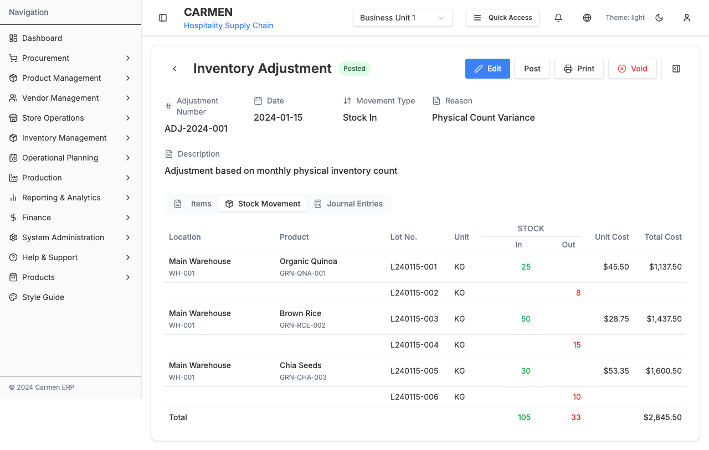
Adjustment Detail - Multi-tab interface with journal entries
Status: ✅ Production
Header:
- Adjustment ID
- Status badge
- Action buttons (Edit/Post/Delete)
Information Panel:
- Date picker
- Adjustment type dropdown
- Location dropdown
- Department dropdown
- Reason dropdown
- Description textarea
- Reference field
Adjustment Types:
- Positive Adjustment (Stock In)
- Negative Adjustment (Stock Out)
- Transfer
- Write-off
- Found Stock
- Damage
- Theft
- Expiry
Stock Movement Table Columns:
- Product Code/Name
- SKU
- Location
- Lot Numbers (expandable)
- Quantity
- UOM
- Unit Cost
- Total Cost
- Actions (Remove)
Summary Panel:
- Total In Quantity
- Total Out Quantity
- Total Cost
Tabs:
- Stock Movement
- Journal Entries
Journal Entry Tab:
- Journal Header (Status, Number, Dates, Created/Posted by)
- Journal Lines Table (Account, Debit, Credit, Department)
Actions:
- Add items
- Remove items
- Edit quantities
- Enter lot details
- Save draft
- Post adjustment
- Delete draft
- Print voucher
Action Flows
Add Item to Adjustment:
Post Adjustment:
Physical Count Wizard
Path: /inventory-management/physical-count
File: app/(main)/inventory-management/physical-count/page.tsx

Physical Count - Multi-step setup wizard
Status: ✅ Production
Step 1: Setup:
- Counter Name (auto-filled)
- Department dropdown
- Date & Time picker
- Count Type (Full/Partial)
- Notes textarea
Step 2: Location Selection:
- Checkbox tree of locations
- Location hierarchy (Building → Floor → Room)
- Select all/none buttons
- Search locations
- Item count per location
Step 3: Item Review:
- Items table (auto-populated)
- Columns: Code, Name, Category, Location, Expected Qty, Unit
- Exclude items checkbox
- Filter by category
- Sort options
Step 4: Final Review:
- Summary of selections
- Counter, Department, Date
- Locations count
- Items count
- Estimated duration
- Edit buttons for each step
Step Indicator:
- Shows current step (1-4)
- Step titles and descriptions
- Progress visualization
Actions:
- Next step
- Previous step
- Save draft
- Start count
- Cancel
Action Flows
Navigate Steps:
Start Count:
Physical Count Active
Path: /inventory-management/physical-count/active/[id]
File: app/(main)/inventory-management/physical-count/active/[id]/page.tsx
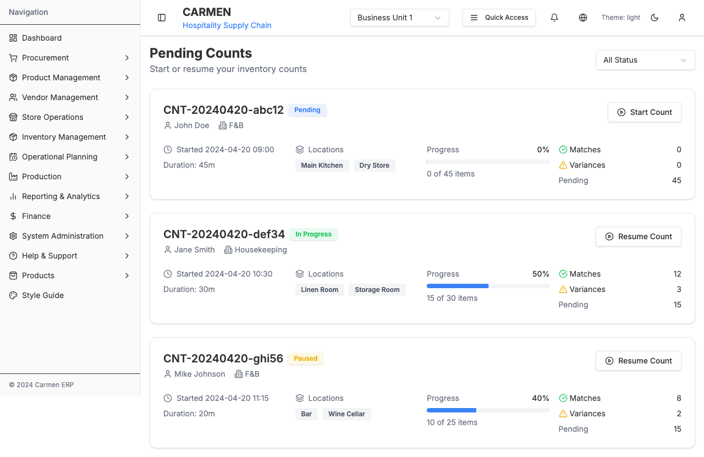
Active Count - Item counting interface
Status: ⚠️ Partial Implementation
Components:
- Count reference header
- Progress indicator (X/Y items)
- Location filter
- Search items
Item Entry Table Columns:
- Item Code/Name
- Expected Quantity
- Actual Count (input)
- Variance (auto-calculated)
- Variance %
- Status (good/variance)
- Notes
- Counted checkbox
Actions:
- Enter actual count
- Mark as counted
- Flag discrepancy
- Add notes
- Save progress
- Submit count
- Cancel count
Action Flows
Enter Count:
Submit Count:
Physical Count Dashboard
Path: /inventory-management/physical-count/dashboard
File: app/(main)/inventory-management/physical-count/dashboard/page.tsx
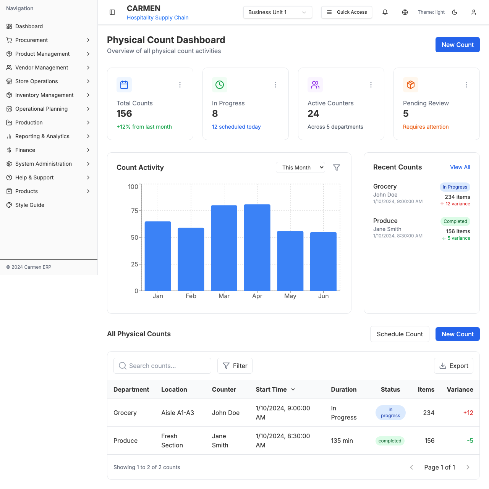
Count Dashboard - Management and tracking interface
Status: ⚠️ Partial Implementation
Summary Cards:
- Active Counts
- Completed Today
- Pending Review
- Average Variance %
Counts Table Columns:
- Count ID
- Date
- Location(s)
- Items Count
- Completed Items
- Progress %
- Status
- Variance %
- Actions
Charts:
- Count completion trend (line)
- Variance by location (bar)
- Variance by category (pie)
Actions:
- Resume count
- Review count
- Export results
- Create new count
Action Flows
Resume Count:
Spot Check Main
Path: /inventory-management/spot-check
File: app/(main)/inventory-management/spot-check/page.tsx
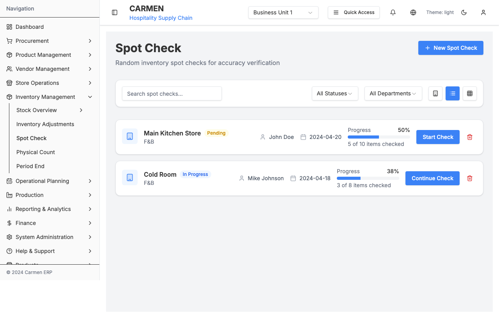
Spot Check - Quick verification with list/grid view
Status: ✅ Production
View Toggle:
- List view
- Grid view
Filter Bar:
- Search box
- Status dropdown (All/Pending/In Progress/Completed)
- Department dropdown
- Location filter (toggle panel)
List View Displays:
- Store Name
- Department badge
- Counter name
- Date
- Status badge
- Item count
- Last count date
- Variance %
- Progress
- Notes preview
- Actions (Start/Delete)
Grid View Card:
- Count ID
- Counter
- Department
- Store
- Date
- Items count
- Actions (Start/Delete)
Actions:
- New spot check
- Start count
- Delete count
- Toggle view
- Apply filters
Action Flows
New Spot Check:
Start Spot Check:
New Spot Check
Path: /inventory-management/spot-check/new
File: app/(main)/inventory-management/spot-check/new/page.tsx
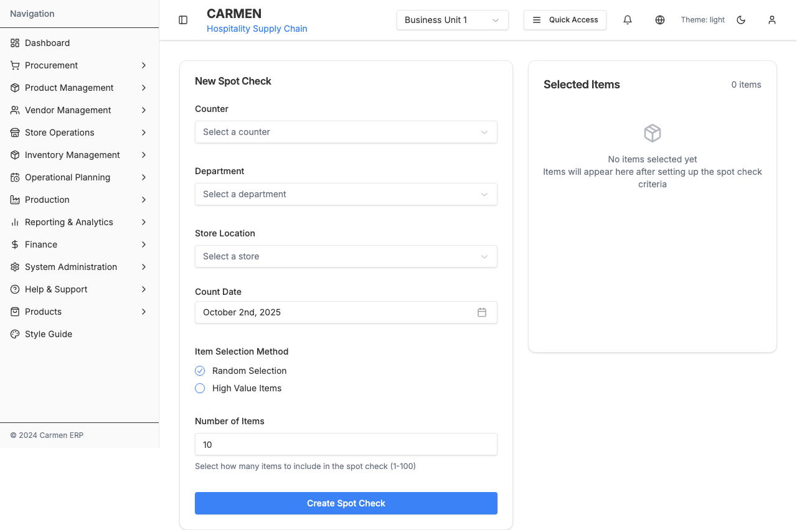
New Spot Check - Quick setup wizard
Status: ✅ Production
Step 1: Setup:
- Department dropdown
- Store/Location dropdown
- Date/Time picker
- Notes
Step 2: Item Selection:
- Random item picker (auto-select N items)
- Manual search and add
- Selected items list
- Remove items
Selected Items Table:
- Item Code
- Item Name
- Expected Qty
- Unit
- Remove button
Step 3: Review:
- Summary of setup
- List of selected items
- Total items count
Actions:
- Next/Previous
- Select random items
- Manual add
- Remove item
- Save draft
- Start check
- Cancel
Action Flows
Random Item Selection:
Start Spot Check:
Active Spot Check
Path: /inventory-management/spot-check/active/[id]
File: app/(main)/inventory-management/spot-check/active/[id]/page.tsx
Active Spot Check - Item counting
Status: ✅ Production
Components:
- Reference header
- Progress indicator
- Item entry form
Item Form Fields:
- Item name/code
- Expected quantity
- Actual count (input)
- Variance (calculated)
- Status dropdown (Good/Damaged/Missing/Expired)
- Notes
- Submit item checkbox
Actions:
- Submit item count
- Flag issue
- Add photo (future)
- Complete check
- Cancel
Action Flows
Submit Item Count:
Complete Check:
Spot Check Dashboard
Path: /inventory-management/spot-check/dashboard
File: app/(main)/inventory-management/spot-check/dashboard/page.tsx

Spot Check Dashboard - Analytics and tracking
Status: ✅ Production
Summary Cards:
- Total Checks This Week
- Average Accuracy %
- Items Flagged
- Pending Actions
Charts:
- Accuracy trend (line)
- Variance by location (bar)
- Issue types distribution (pie)
Recent Checks Table:
- Date
- Location
- Items
- Accuracy %
- Issues found
- Status
Actions:
- View check detail
- Export analytics
- Filter date range
Action Flows
View Check Detail:
Fractional Inventory
Path: /inventory-management/fractional-inventory
File: app/(main)/inventory-management/fractional-inventory/page.tsx
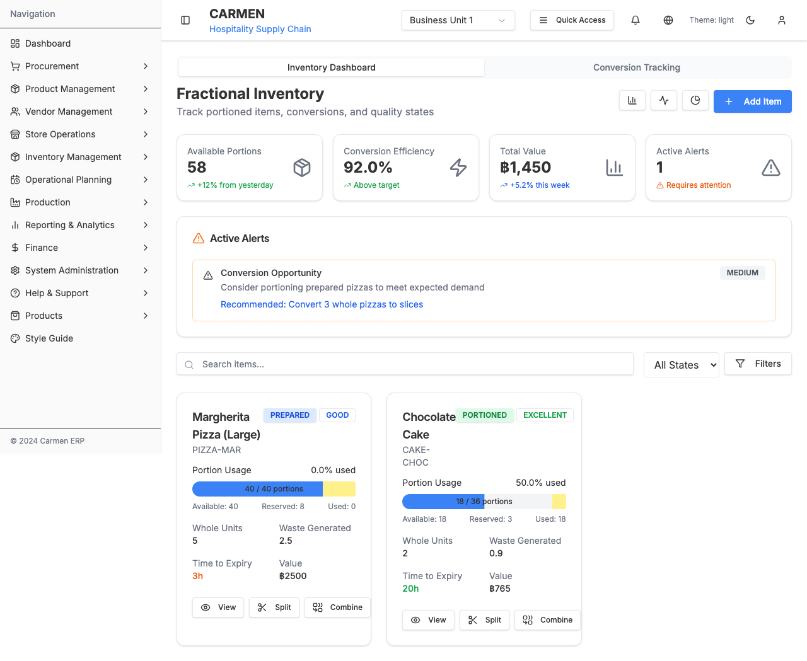
Fractional Inventory - Portion tracking and conversion
Status: ✅ Production
Tabs:
- Inventory Dashboard
- Conversion Tracking
Inventory Dashboard Tab:
Summary Cards:
- Total Fractional Items
- Active Portions
- Pending Conversions
- Waste Generated Today
Stock Table Columns:
- Item Code/Name
- Current State (WHOLE/PARTIAL/PREPARED)
- Whole Units Available
- Partial Quantity Available
- Total Portions Available
- Reserved Portions
- Quality Grade (EXCELLENT/GOOD/FAIR/POOR)
- Expires At (countdown)
- Actions (Split/Combine/Details)
Filters:
- Location
- State (Whole/Partial/Prepared)
- Quality Grade
- Expiring Soon (<4 hours)
Conversion Tracking Tab:
Recent Conversions Table:
- Date/Time
- Item Name
- Operation Type (Split/Combine)
- From State → To State
- Quantity Converted
- Resulting Units/Portions
- Waste Generated
- Performed By
- Reason
- Notes
Charts:
- Conversions over time (line)
- Waste by item (bar)
- Operation type distribution (pie)
Actions:
- Split item
- Combine portions
- View stock details
- Filter conversions
- Export report
Action Flows
Split Operation:
Combine Operation:
Period End
Path: /inventory-management/period-end
File: app/(main)/inventory-management/period-end/page.tsx
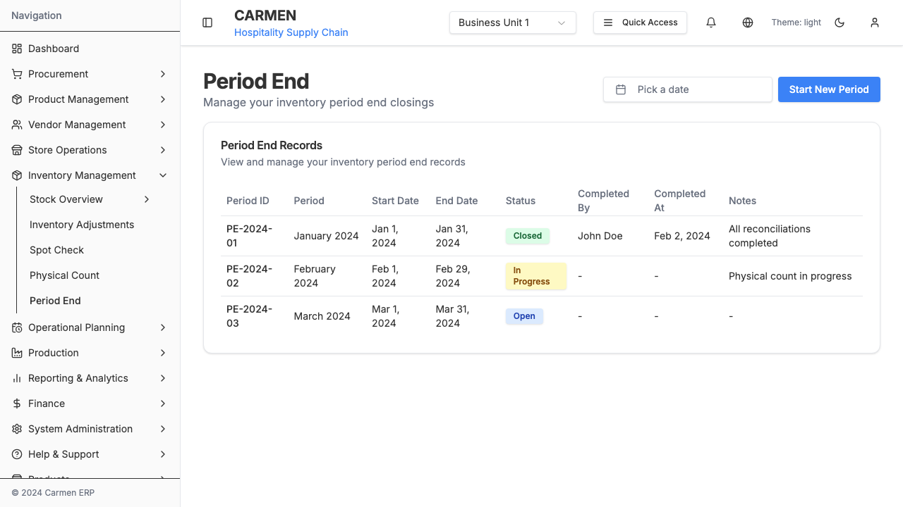
Period End - Month-end closing procedures
Status: ✅ Production
Header:
- Title
- Date picker (period selection)
- Start New Period button
Period Records Table Columns:
- Period ID
- Period (e.g., "January 2024")
- Start Date
- End Date
- Status (Open/In Progress/Closed)
- Completed By
- Completed At
- Notes
Status Badges:
- Open (Blue)
- In Progress (Yellow)
- Closed (Green)
Actions:
- Start new period
- Click row to view detail
- Close period
Action Flows
Start New Period:
View Period Detail:
Period End Detail
Path: /inventory-management/period-end/[id]
File: app/(main)/inventory-management/period-end/[id]/page.tsx
Period End Detail - Closing checklist and reports
Status: ⚠️ Partial Implementation
Header:
- Period ID
- Status badge
- Close Period button
Summary Panel:
- Period range
- Opening stock value
- Closing stock value
- Variance
- Physical count status
- Adjustment count
- Status
Checklist:
- All stock receipts posted
- All stock issues posted
- Physical count completed
- Variances reconciled
- Adjustments posted
- Reports generated
- Finance reviewed
Reports Section:
- Inventory valuation report
- Movement summary
- Variance analysis
- Period-end snapshot
Actions:
- Run checklist item
- Generate report
- Close period
- Cancel closing
Action Flows
Close Period:
Physical Count Management
Path: /inventory-management/physical-count-management
File: app/(main)/inventory-management/physical-count-management/page.tsx
Physical Count Management - Scheduling and oversight
Status: ✅ Production
Header:
- Title
- New Count button
Filter Bar:
- Status filter
- Location filter
- Date range
Counts List (Cards):
- Store Name
- Department
- Counter assigned
- Scheduled Date
- Status (Scheduled/In Progress/Completed)
- Item count
- Completed count (progress)
- Variance %
- Actions (Start/Edit/Delete)
Actions:
- Create new count
- Start count
- Edit scheduled count
- Delete count
Action Flows
Create New Count:
Start Count:
Modals and Dialogs
1. Item Selection Modal
Trigger: Click "Add Item" in Stock In, Adjustments
Component: item-lookup-modal.tsx
Filter Fields:
- Search by name/code
- Category filter (dropdown)
- In stock only (checkbox)
Display:
- Items table with checkboxes
- Columns: Code, Name, Category, Current Stock, Unit
- Selected items preview
Actions:
- Search items
- Filter by category
- Select/deselect items
- Add selected items
- Cancel
Action Flows
Search Items:
Add Selected Items:
2. Lot Entry Modal
Trigger: Enter lot details for batch-tracked items
Component: lot-entry-modal.tsx
Fields:
- Lot Number (text input)
- Expiry Date (date picker)
- Quantity (number input)
- Notes (textarea)
Multiple Lots:
- Add another lot button
- List of entered lots
- Remove lot button
Actions:
- Add lot
- Remove lot
- Save lots
- Cancel
Action Flows
Add Lot:
Save Lots:
3. Conversion Operations Modal
Trigger: Click Split or Combine in Fractional Inventory
Component: conversion-operations-modal.tsx
Split Operation Fields:
- Stock ID (read-only)
- Item Name (read-only)
- Available Whole Units (read-only)
- Split Quantity (input)
- Target Portion Size (dropdown)
- Resulting Portions (calculated)
- Conversion Cost (calculated)
- Reason (dropdown)
- Notes
Combine Operation Fields:
- Stock ID (read-only)
- Item Name (read-only)
- Available Portions (read-only)
- Combine Quantity (input)
- Target: Whole Unit
- Waste % (calculated)
- Reason (dropdown)
- Notes
Actions:
- Confirm conversion
- Cancel
Action Flows
Split Item:
Combine Portions:
4. Transfer Creation Modal
Trigger: Create transfer from suggestions
Component: transfer-creation-modal.tsx
Fields:
- From Location (dropdown)
- To Location (dropdown)
- Item (pre-filled)
- Quantity (input)
- Transfer Date (date picker)
- Priority (dropdown)
- Reason (dropdown)
- Notes
Actions:
- Create transfer
- Cancel
Action Flows
Create Transfer:
5. Delete Confirmation Dialog
Trigger: Delete adjustment, count, or other record
Component: delete-confirmation-dialog.tsx
Displays:
- Warning message
- Record details
- Dependency check (if applicable)
- Cannot undo warning
Actions:
- Confirm Delete
- Cancel
Action Flows
Confirm Delete:
6. Count Detail Form Modal
Trigger: View/edit count in Count Management
Component: count-detail-form.tsx
Fields:
- Location (dropdown)
- Counter assignment (dropdown)
- Scheduled date/time
- Count type (Full/Partial/Spot)
- Items selection (if partial)
- Notes
- Recurrence (One-time/Weekly/Monthly)
Actions:
- Save
- Schedule
- Cancel
Action Flows
Save Count:
7. Movement History Panel
Trigger: Click product in Inventory Balance
Component: movement-history-panel.tsx
Display:
- Side panel (right)
- Product name header
- Movement history table
Table Columns:
- Date
- Transaction Type
- Reference
- Quantity In
- Quantity Out
- Balance
- Notes
Actions:
- Close panel
- Filter by type
- Export history
Action Flows
View History:
Dropdown Fields Reference
Status Dropdown
Values:
- Draft
- Pending
- In Progress
- Completed
- Posted
- Cancelled
- Voided
Used in: Adjustments, Receipts, Counts
Adjustment Type Dropdown
Values:
- Positive Adjustment (Stock In)
- Negative Adjustment (Stock Out)
- Transfer
- Write-off
- Found Stock
- Damage
- Theft
- Expiry
- Quality Control
- System Correction
- Other
Used in: Inventory Adjustments
Location Dropdown
Hierarchy:
- Main Kitchen
- Dry Store
- Cold Room
- Freezer
- Restaurant
- Bar Stock
- Service Station
- Central Warehouse
- Receiving
- Storage
Used in: All inventory transactions
Department Dropdown
Values:
- F&B (Food & Beverage)
- Housekeeping
- Maintenance
- Front Office
- Kitchen
- Engineering
Used in: Adjustments, Counts, Reports
Count Type Dropdown
Values:
- Full Count
- Partial Count
- Spot Check
- Cycle Count
Used in: Physical Count, Count Management
Source Type Dropdown
Values:
- Purchase Order
- Transfer In
- Production
- Found Stock
- Other
Used in: Stock In
Adjustment Reason Dropdown
Values:
- Physical count variance
- Damage
- Theft
- Expiry
- Found stock
- Transfer
- Production
- Quality control
- System correction
- Other (with notes)
Used in: Inventory Adjustments
Valuation Method Dropdown
Values:
- FIFO (First In First Out)
- LIFO (Last In First Out)
- Weighted Average Cost
Used in: Stock Card, Reports
Portion Size Dropdown (Fractional)
Values: (Dynamic based on item)
- Slice (8 per whole)
- Half (2 per whole)
- Quarter (4 per whole)
- Custom
Used in: Fractional Inventory
Quality Grade Dropdown (Fractional)
Values:
- EXCELLENT
- GOOD
- FAIR
- POOR
Used in: Fractional Inventory
Stock State Dropdown (Fractional)
Values:
- WHOLE
- PARTIAL
- PREPARED
Used in: Fractional Inventory
View Type Radio Buttons
Values:
- Category View
- Product View
- Lot View
Used in: Inventory Balance Report
Date Range Picker
Presets:
- Today
- Last 7 Days
- Last 30 Days
- Last Quarter
- Last Year
- Custom Range
Used in: Filters, Reports
Actions and Buttons Reference
Global Actions (appearing across multiple pages):
- Search - Real-time search with debounce
- Filter - Open filter dialog/panel
- Export - Export to Excel/PDF
- Add New - Create new record
- Refresh - Reload data
- Print - Print current view
List View Actions:
- View Details - Navigate to detail page
- Edit - Navigate to edit page
- Delete - Delete with confirmation
- Post - Finalize transaction
- Void - Cancel posted transaction
- Export Single - Export record
- Duplicate - Clone record
Detail View Actions:
- Back - Return to list
- Edit - Navigate to edit page
- Save - Save changes
- Cancel - Discard changes
- Delete - Delete record
- Post - Finalize transaction
- Print - Print view
- Download PDF - Export to PDF
Form Actions:
- Save - Save and return to list
- Save and New - Save and create another
- Save Draft - Save without posting
- Post - Finalize transaction
- Cancel - Return without saving
- Reset - Clear form fields
Table Actions:
- Sort - Sort by column
- Filter - Filter column
- Expand - Expand grouped row
- Collapse - Collapse grouped row
- Select - Select row checkbox
- Select All - Select all rows
Inventory-Specific Actions:
- Add Item - Add item to document
- Remove Item - Remove item from document
- Enter Lot - Enter lot/batch details
- View Movement - View item movement history
- Create Adjustment - Quick adjustment
- Split Item - Split whole to portions
- Combine Portions - Combine to whole
- Start Count - Begin counting
- Submit Count - Complete count
- Create Transfer - Create transfer request
Form Components
Input Fields
- Text input (standard)
- Number input (with min/max)
- Currency input (formatted)
- Percentage input (0-100%)
- Textarea (multi-line)
- Search input (with icon)
Selection Components
- Dropdown select (single)
- Multi-select dropdown
- Radio button group
- Checkbox group
- Toggle switch
- Date picker (calendar)
- Date range picker
- Time picker
File Components
- File upload (single file)
- File upload (multiple files)
- Image upload with preview
- Document upload with type
Specialized Components
- Location selector (hierarchical tree)
- Item lookup (searchable modal)
- Lot entry (batch tracking)
- Quantity input (with unit)
- Currency input (with symbol)
- Autocomplete (with suggestions)
Validation Components
- Required field indicator (*)
- Inline error message
- Field-level validation
- Form-level validation summary
- Async validation (e.g., duplicate check)
Data Display Components
Tables
- Sortable columns - Click header to sort
- Pagination - Page size options (10/25/50/100)
- Row selection - Checkbox select
- Inline actions - Action buttons per row
- Expandable rows - Show additional details
- Column visibility - Show/hide columns
- Column reordering - Drag to reorder
- Export functionality - Export visible data
- Grouped table - Hierarchical grouping
- Summary rows - Totals and subtotals
Cards
- Metric card (with icon and value)
- Summary card (with multiple metrics)
- Statistics card (with trend)
- Action card (with quick actions)
- Progress card (with completion %)
- Alert card (with warning/error)
Lists
- Simple list (item name + icon)
- Detailed list (multiple fields)
- Grouped list (by category)
- Hierarchical list (tree structure)
- Timeline list (chronological)
Statistics/Metrics
- KPI cards (large value + label)
- Summary widgets (multiple metrics)
- Progress indicators (bar/circle)
- Status badges (colored labels)
- Charts (bar/line/pie from Recharts)
- Trend indicators (up/down arrows)
- Gauge charts (percentage display)
Timeline/History
- Activity feed (recent actions)
- Audit trail (who/what/when)
- Change log (before/after)
- Movement history (transactions)
Inventory-Specific Components
- Stock level indicator (with colors)
- Expiry countdown (days remaining)
- Variance display (expected vs actual)
- Lot information table
- Quality grade badge
- State indicator (fractional)
- Draggable widgets (dashboard)
Glossary
A
Adjustment: An inventory transaction that corrects stock levels due to damage, theft, expiry, or counting discrepancies without a corresponding physical receipt or issue.
Aging: The process of tracking how long inventory items have been in stock to identify slow-moving items and potential obsolescence.
As Of Date: The specific date for which a report reflects inventory status, useful for historical reporting and period comparisons.
Average Cost: The weighted average unit cost of inventory, calculated as total value divided by total quantity.
B
Balance Report: A comprehensive report showing current inventory quantities and values across locations, categories, and products.
Batch Tracking: The practice of tracking inventory by production batch or lot number, essential for quality control, expiry management, and recall capabilities.
Base Unit: The primary unit of measure for an item (e.g., Each, Case, Kilogram, Liter).
C
Category: A classification grouping for inventory items (e.g., Food, Beverages, Cleaning Supplies, Linen).
Conversion: In fractional inventory, the process of splitting whole units into portions or combining portions back into whole units.
Count: See Physical Count or Spot Check.
Count Variance: The difference between expected (system) quantity and actual (counted) quantity, expressed as a number or percentage.
Cycle Count: A scheduled counting procedure where different portions of inventory are counted at different times throughout the year.
D
Department: An organizational unit responsible for inventory usage and management (e.g., F&B, Housekeeping, Maintenance).
Draft: A saved but not finalized transaction that does not affect inventory levels or create journal entries, allowing for later editing.
E
Expiry Date: The date after which an item should not be used or sold, critical for perishable goods and food safety.
Expiring Soon: Items approaching their expiry date, typically flagged when within 7 days of expiry.
F
FIFO (First In, First Out): An inventory valuation method where the oldest stock is assumed to be sold or used first.
Fractional Inventory: An inventory management system for items that can be divided into portions (e.g., pizzas into slices) with state tracking, quality monitoring, and conversion capabilities.
Fill Rate: The percentage of demand that can be satisfied from current stock levels without backorders.
G
GRN (Goods Received Note): A document recording the receipt of goods into inventory, typically linked to a purchase order.
Grade (Quality): A classification of item condition or freshness (EXCELLENT, GOOD, FAIR, POOR), used primarily in fractional inventory management.
I
Inventory Adjustment: See Adjustment.
Inventory Balance: The current quantity and value of stock on hand at a specific point in time.
Inventory Turnover: A ratio showing how many times inventory is sold, used, and replaced over a given period.
Issue: The release of inventory from storage for use, production, or sale.
J
Journal Entry: An accounting entry recording the financial impact of inventory transactions through debits and credits to general ledger accounts.
L
Location: A physical storage area where inventory is kept (e.g., Main Kitchen, Cold Room, Dry Store, Central Warehouse).
Lot Number: A unique identifier for a batch of items, used in batch tracking for quality control and traceability.
Low Stock: Items with quantities at or below their defined reorder point, requiring replenishment.
M
Movement: Any transaction that changes inventory quantity, including receipts, issues, transfers, and adjustments.
Movement History: A chronological log of all transactions affecting an item's stock level and location.
P
Period End: The month-end or period-end process of closing inventory transactions, reconciling physical counts, and generating financial reports.
Physical Count: A comprehensive counting process where all items in selected locations are physically counted and compared to system records.
Portion: A fractional unit of a whole item (e.g., one slice of pizza where the whole pizza contains 8 slices).
Posting: The act of finalizing a transaction, which updates inventory levels, creates journal entries, and locks the transaction from further editing.
Purchase Order (PO): A document sent to a supplier to purchase goods, which generates expected stock receipts when goods are delivered.
Q
Quality Grade: See Grade.
R
Receipt: The process of receiving goods into inventory, typically from a purchase order, transfer, or production.
Reorder Point: The inventory level that triggers a replenishment order to avoid stockouts.
Reserved: Inventory that is allocated for a specific purpose but not yet issued (e.g., reserved for a production order or customer order).
S
SKU (Stock Keeping Unit): A unique identifier for each distinct product in inventory, used for tracking and identification.
Slow Moving: Items with low turnover rates, identified by long periods without movement or low transaction frequency.
Spot Check: A quick, random count of selected items to verify inventory accuracy without performing a full physical count.
State (Fractional): The current form of fractional inventory items (WHOLE = intact unit, PARTIAL = partially used, PREPARED = ready for service).
Stock Card: A detailed record showing all movements, current balance, and historical transactions for a specific item.
Stock In: See Receipt.
Stock Efficiency: A metric measuring how well inventory levels match demand patterns and minimize waste.
T
Transfer: Movement of inventory between locations within the organization.
Turnover Rate: See Inventory Turnover.
U
Unit Cost: The cost per single unit of an item, used for valuation calculations.
Unit of Measure (UOM): The unit in which inventory quantities are tracked (e.g., Each, Box, Liter, Kilogram, Dozen).
V
Valuation: The process of calculating the total value of inventory using methods such as FIFO, LIFO, or weighted average cost.
Variance: The difference between expected and actual quantities or values, typically expressed in both absolute numbers and percentages.
W
Waste: Inventory lost due to spoilage, damage, or portion conversion inefficiencies, tracked particularly in fractional inventory.
Warehouse: See Location.
Whole Unit: The complete, undivided form of a fractional item (e.g., a whole pizza before being cut into slices).
Abbreviations
| Abbreviation | Full Term | Context |
|---|---|---|
| Adj | Adjustment | Inventory adjustment transaction |
| COGS | Cost of Goods Sold | Expense account for issued inventory |
| Exp | Expiry / Expired | Expiration date or expired items |
| FIFO | First In, First Out | Inventory valuation method |
| F&B | Food & Beverage | Department type |
| GRN | Goods Received Note | Stock receipt document |
| ID | Identifier | Unique reference number |
| JE | Journal Entry | Accounting entry |
| LIFO | Last In, First Out | Inventory valuation method |
| Loc | Location | Storage location |
| PA | Positive Adjustment | Stock in adjustment |
| PC | Physical Count | Full inventory count |
| PE | Period End | Month-end closing |
| PO | Purchase Order | Purchase document |
| Qty | Quantity | Amount/count |
| SC | Spot Check | Random item count |
| SKU | Stock Keeping Unit | Product identifier |
| UOM | Unit of Measure | Quantity unit |
| WAC | Weighted Average Cost | Valuation method |
Feature Gap Analysis
Fully Implemented Features ✅ (24 features - 41%)
- Dashboard - Draggable widget system
- Stock Overview - Multi-location visibility
- Summary Metrics - Real-time calculations
- Stock Distribution Charts - Bar and pie charts
- Performance Comparison - Location analytics
- Transfer Suggestions - Optimization recommendations
- Inventory Balance Report - Hierarchical grouping
- Stock Card Detail - Complete history
- Movement History - Transaction log
- Valuation Display - FIFO/Average methods
- Stock In List - Receipt management
- Inventory Adjustments List - Complete listing
- Adjustment Detail - Multi-tab interface
- Journal Entry Display - Auto-generated entries
- Physical Count Wizard - 4-step process
- Location Selection - Hierarchical tree
- Active Count Tracking - Progress monitoring
- Spot Check Main - List/grid views
- New Spot Check - Quick setup
- Active Spot Check - Item counting
- Spot Check Dashboard - Analytics
- Fractional Inventory Dashboard - Portion tracking
- Conversion Operations - Split/combine
- Period End List - Period records
Partially Implemented Features ⚠️ (16 features - 28%)
- Stock In Posting - UI exists, backend incomplete
- Source Selection - Cannot link to PO/Transfer
- Lot Entry - Modal placeholder, no integration
- Inventory Balance Export - Button exists, not functional
- Movement History Integration - Hardcoded data
- Physical Count Posting - No automatic adjustment
- Barcode Support - Placeholder only
- Photo Upload (Spot Check) - UI placeholder
- Period End Checklist - Static, no automation
- Period Locking - Status change not enforced
- Count Scheduling - List view only
- Progress Dashboard - Minimal real-time data
- Auto-conversion Rules - Field exists, no logic
- Waste Reporting - Tracked but no reports
- Error Handling - Basic, not comprehensive
- Accessibility - Partial WCAG compliance
Not Implemented Features ❌ (18 features - 31%)
- Slow Moving Report - Route exists, no implementation
- Inventory Aging Report - Route exists, no implementation
- Stock Card List Page - Minimal implementation
- New Adjustment Form - Button exists, no form
- Adjustment Posting - View-only mode
- Multi-source Receipt - No PO/Transfer integration
- Inventory Valuation Report - Not implemented
- Movement Summary Report - Not implemented
- Variance Analysis Report - Not implemented
- Barcode Scanning - Complete feature missing
- Mobile App - Web responsive only
- Data Persistence - All mock data
- API Layer - No backend
- GL Integration - Journal entries not posted
- Audit Trail - No comprehensive logging
- Automated Testing - No test coverage
- Server Validation - Client-side only
- Performance Optimization - Not optimized for scale
Development Priority Matrix
Priority 1 (MVP - 46-63 days):
- Data Persistence Layer (15-20 days)
- Stock In Posting (3-4 days)
- Adjustment Creation (4-5 days)
- Adjustment Posting (3-4 days)
- Physical Count Posting (3-4 days)
- Period End Locking (2-3 days)
- Finance Integration (7-10 days)
- Permissions Enforcement (4-5 days)
Priority 2 (Production - 28-43 days):
- PO Integration (5-7 days)
- Lot/Batch Entry (3-4 days)
- Inventory Valuation Report (4-5 days)
- Audit Trail (5-7 days)
- Error Handling (3-5 days)
- Data Validation (3-4 days)
- Count Scheduling (3-4 days)
- Movement History Integration (2-3 days)
Priority 3 (Enhancement - 20-36 days):
- Slow Moving Report (3-5 days)
- Inventory Aging Report (3-5 days)
- Stock Card List (2-3 days)
- Waste Reporting (2-3 days)
- Export Functionality (1-2 days)
- Photo Upload (2-3 days)
- Auto-conversion Rules (4-5 days)
- Performance Optimization (3-5 days)
Priority 4 (Future - 40-59 days):
- Barcode Scanning (5-7 days)
- Mobile App (20-30 days)
- Automated Testing (10-15 days)
- Accessibility Improvements (5-7 days)
Last Updated: October 2, 2025
Status: Complete
Module: Inventory Management
Version: 1.0